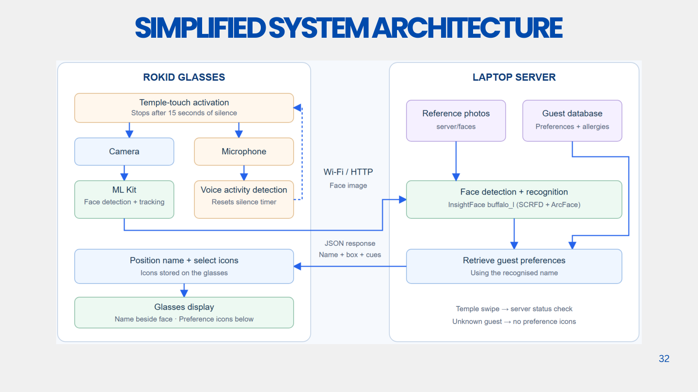

Executive summary
Hotels can collect guest preferences without consistently turning them into useful service at the next encounter. This project investigates how luxury-hotel staff could capture, share, and retrieve relevant guest context during the same stay, particularly when a first-time guest has little prior service history. The initial application is food-and-drink service in a club lounge. The intended value is continuity between employees: something a guest tells one employee becomes available to the next, at a suitable moment.
Semester 1 produced a working smart-glasses recognition-and-display prototype, a separate lounge-services scaffold, early preference-extraction experiments, and formative testing. The Rokid application tracks faces locally, sends a selected face crop to a laptop for recognition, and displays a recognised name with one or two fictional preference/allergy cues. A temple tap activates the session; 15 seconds without detected speech ends it. Automatic conversation-to-profile updating and contextual cue selection remain development tasks. P1, P3
Four documented successful warm rendering samples averaged 1.18 seconds from handled temple tap to Android frame commit, above the project's provisional sub-second target. A team-confirmed 20-minute comparison reported battery-level drops of 28 versus 9 percentage points for continuous and triggered operation. In a walkthrough with 10 non-hotel participants, all described activation as easy and 70% saw potential usefulness, but incorporating cues naturally remained difficult. These findings support further development; they do not establish improved guest satisfaction, recognition accuracy, or hotel revenue. The next phase prioritises reliable extraction, relevant cues, and comparison with ordinary profile lookup using hotel staff. P1, P4, P7
1. Context, evidence, and design opportunity
1.1 From hotel performance to an actionable service problem
The presentation begins with a hotel-management concern: preserving service quality while manpower and operating costs rise. Revenue per available room, RevPAR, equals average daily rate multiplied by occupancy expressed as a fraction. Personalised service might influence guest evaluations and future choices, but many other factors affect those financial measures. Neither a working wearable nor a positive usability response demonstrates increased RevPAR. The present project therefore measures the nearer outcomes it can influence: accurate information, timely retrieval, and an appropriate service action. P1
Here, personalisation means using relevant, permitted knowledge about an individual guest to adapt an interaction or service. Recognition, context access, service adaptation, and the guest's perception of fit are separate steps. Lei et al.'s three-study investigation shows that a hotel's personalisation attempt need not be perceived as personal by its recipient. This distinction makes cue comprehension and relevance necessary evaluation outcomes alongside technical performance. R1
Medallia's study of 1,749 U.S. hotel guests found a relationship between perceived personalisation and satisfaction, with opportunities to improve ordinary interactions during a stay. Its findings are survey associations from a vendor-produced report. Piccoli, Lui, and Grün's observational hotel study also connects structured preference capture with service/value evaluations and booking-channel behaviour. These sources justify investigating continuity of guest knowledge; they do not prove that glasses cause loyalty or profit. R2, R3
1.2 What the fieldwork establishes
The team investigated hotel operations through visits and stakeholder discussions. Two documented cases are particularly useful. They describe different properties and should retain that distinction. P2
| Setting and evidence | Relevant observation | Design implication |
|---|---|---|
| Novotel Singapore on Stevens; formatted visit notes | ACDC guest profiles, pre-arrival review, role-dependent access, and memory or hardcopy aids in F&B service were described. | Test whether relevant context can be retrieved during an encounter with less searching. ACDC belongs to this Accor example. |
| PARKROYAL; visit summary and later discussion transcript | Interest in lounge guest recognition; guest information already entered into a PMS; some notes surfaced through the breakfast system, with reports as a fallback. | Build on existing information flows. Investigate where visibility, confirmation, or action still breaks down. |
| Interim presentation and walkthrough | The team described delayed manual entry, inconsistent interpretation, and difficulty referring to notes during conversation. | Treat timely capture and natural interaction as requirements, then measure them in the target workflow. |
PARKROYAL's existing PMS-to-breakfast flow is significant: the problem is more specific than an absence of guest data. The notes are qualitative evidence, not a measured incidence of missed preferences. Unclear system names and numerical claims in the noisy visit transcript require confirmation before becoming specifications.
First-time guests motivate the same-stay focus because little historical interaction data may exist. They can nevertheless supply booking details, pre-arrival preferences, requests, and conversational context. The design opportunity is to make that emerging knowledge useful during the current stay. The presentation's single-digit retention statement is stakeholder-reported; no cohort definition or retention dataset is available for analysis. P1, P2
1.3 The service opportunity
An illustrative case is a guest telling one employee that they usually drink coffee with oat milk. A later server can offer that option and confirm whether the guest wants it now. Remembering the statement supports continuity; automatically treating every past order as a permanent preference would undermine it. A complaint that a drink is too sweet is also time-specific evidence, rather than permission to infer every future beverage choice.
The lounge offers a bounded place to study repeated food-and-drink encounters and staff handovers. The project records permission to use PARKROYAL's lounge as a POC setting; the conditions for staff participation, live guest data, and biometric testing still need to be established. P2, P6
2. Aim, scope, and requirements
The design question is:
How might we enable luxury-hotel staff to capture, share, and access relevant guest information seamlessly, so they can deliver consistently personalised, high-quality service?
The Semester 1 objective is to establish a viable technical and interaction foundation for that workflow. The first scope comprises a lounge encounter, a small enrolled gallery, demo profiles, concise cues, and a manually triggered session. It includes recognition-and-retrieval prototyping and exploratory preference extraction. It excludes validated production PMS integration, autonomous allergy decisions, proven guest-experience improvements, and commercial deployment. P1
LQA provides useful service behaviours against which to frame requirements, including anticipatory service, natural communication, discreet name use, and reconfirmation of dietary needs. The repository contains a selected 15-item F&B table. It is a departmental subset with reviewer evidence requirements, rather than a complete audit or a new official LQA score. LQA benchmarking should also be distinguished from hotel star classification. P8, R4
| ID | User need and engineering requirement | Verification and interim status |
|---|---|---|
| DR1 · Timely support | Show a useful cue within a provisional <1 s target after activation. Define the timing boundary before comparing designs. | Four successful warm frame commits averaged 1.18 s; target not met. Independent cold-start performance remains unknown. |
| DR2 · Low effort | Start with a single temple tap and stop after 15 s without detected speech. | Implemented; documented device checks support timeout behaviour. Restaurant speech/noise accuracy remains untested. |
| DR3 · Glanceability | Show a name and at most two concise cues near the selected face. | Implemented; formative feedback supports readability but reveals difficulty using cues naturally. |
| DR4 · Preference continuity | Preserve an explicit preference with source, time, scope, and review status, then make the approved update available to another employee. | Shared demo store exists; reliable extraction and a complete approval-to-next-employee flow remain incomplete. |
| DR5 · Correct association | Withhold guest-specific cues for unknown, ambiguous, lost, or stale tracks. | Suppression paths exist; field false-match/false-reveal rates have not been measured. |
| DR6 · Appropriate information | Distinguish preferences from allergies, minimise displayed fields, and provide a manual path. | Fictional allergy cues are available; operational verification, access roles, and consent procedures require hotel review. |
The sub-second latency target is a team engineering aspiration, not a timing rule supplied by LQA. Likewise, displaying information beside a face is a design choice to test; it does not itself establish maintained eye contact. P1, P3, P4
3. Concept generation and selection
The team's functional exploration separates capture and processing from retrieval and display. It considers how to associate a conversation with a guest, convert it into a useful record, and deliver relevant context to the next employee. The presentation compares three complete concepts. Its matrix is a qualitative design comparison; measured preference for the complete glasses workflow has not yet been established. P1
| Concept | Capture and guest association | Retrieval during service | Principal trade-off |
|---|---|---|---|
| Manual/shared profile plus phone | Staff select the guest and type a note. | Open the profile and select relevant details. | Uses familiar infrastructure and avoids face matching; effort and attention costs depend on the actual workflow. |
| Audio badge plus earpiece | Speech can reduce typing; staff still need a reliable guest association. | Brief spoken prompts. | Hands-free presentation, but transient audio can interrupt conversation or expose information audibly. |
| Camera/display smart glasses plus server | Local tracking and server recognition associate a visible guest; extraction is a separate development task. | Compact visual cues beside the selected face. | Promising access while hands are occupied; introduces recognition, display, battery, privacy, and network constraints. |
The glasses concept was selected for prototyping because it combines guest association and a private visual channel within the encounter. This is a reason to test it, rather than proof of superiority. A fair next comparison gives the phone baseline the same current profile and equivalent capture support, avoiding an artificially weak comparator.
Existing products establish substantial prior capability. Oracle OPERA Cloud documents profiles containing preferences and images. hotelkit supports guest-request assignment, escalation, and follow-up. SoftServe has demonstrated wearable AR face identification, including VIP recognition. Consequently, face recognition on glasses and shared guest records are not themselves novel. R5, R6, R7
The project's contribution is the investigation of a combined same-stay service workflow: low-effort guest-context capture, checked association, and timely presentation of a relevant cue. Its lounge proposal additionally explores an active lounge cohort bounded by entry and exit. The implemented standalone glasses demo currently recognises against its loaded gallery rather than this card-derived cohort. That distinction defines an integration milestone. P3, P6
4. Prototype design and implementation
4.1 Working glasses-to-laptop path
The Android/Kotlin application runs on the available Rokid hardware, identified as RV101 in the device benchmarks. The repository directory is titled “Glass3 face recognition”; this naming does not justify assuming every Glass3 enterprise SDK capability is present. CameraX supplies frames and bundled ML Kit performs local face detection and tracking. Head direction is used as an attention proxy: a face must lie within the central 30% of both calibrated display axes to qualify. This is not eye tracking. P3, P5
While active, the application considers the latest camera frame at most every 80 ms. It selects one centred face, pads its crop, and sends a JPEG about every two seconds, with one server request in flight. A FastAPI laptop service uses InsightFace buffalo_l: SCRFD for detection/alignment and ArcFace embeddings for identity matching. Cosine similarity must exceed both a threshold and the lead over the next-best identity; current defaults are 0.45 and 0.10. Those values need representative calibration and are not probabilities of correctness.
The service retrieves demo cues from SQLite and returns a name, bounding box, and cue data. The application maps the result back to its local track, rejects stale or ambiguous associations, and draws a name with at most two bundled icons. Unknown guests receive no preference icons. Losing the track, stopping a session, or exceeding freshness limits clears the information. P3
The standalone server caches profiles at startup; database edits require a restart to appear. Shared storage therefore does not yet demonstrate live cross-shift updating. The demo also looks up cues by recognised name; integration should use an opaque guest ID so two guests with the same name remain distinct.

4.2 Activation and resource management
The initial continuous approach kept recognition work active beyond useful conversations. The revised policy starts with a temple tap, extends the same session when local speech activity is detected, and closes camera and microphone after 15 seconds without detected speech. Audio alone cannot activate an idle session. A forward swipe requests a connection check; background health polling is absent from the current app. P3
WebRTC voice activity detection operates on 16 kHz mono audio. In the working application, audio is overwritten in memory and is not saved, transcribed, or uploaded. It currently controls recognition activity. The proposed preference-capture pipeline requires a separate implementation and data-handling arrangement; session activation should not be described as completed conversation recording.
Development also exposed a device-specific issue: the VOICE_RECOGNITION input supplied zeros despite initialising. The production path changed to MIC, and an input probe checked actual nonzero samples. This illustrates why verifying API startup alone was insufficient. Documented 2 November checks reported 30 JVM tests, eight device tests, and successful build/lint. These are historical checks recorded in the repository, not tests rerun for this report. P3
4.3 Display and information design
The display evolved from longer text toward compact symbols. A main icon identifies the item; an independent heart, crossed-out heart, or warning marker indicates a preference, dislike, or fictional demo allergy. Symbols are bundled on the glasses, avoiding separate icon downloads. The current server prioritises allergy warnings and returns at most two cues. P3
Concise presentation follows platform guidance for transient, glanceable elements, but visual simplicity cannot be assumed to eliminate distraction. Laboratory work on Google Glass found interference with concurrent visual-search tasks; it motivates measuring the proposed display in service conditions rather than predicting its effect. The formative test's conversation difficulties reinforce this requirement. Contextual filtering—for example, showing dining rather than room preferences during a drink order—is proposed, not implemented. R8, R9, P1
4.4 Separate lounge-services scaffold
The repository also implements lounge-control, face-worker, and mock-hotel services with simulated tap events, temporary presence, candidate expiry, and synthetic profiles. Its face worker has a two-of-three observation stability rule. The standalone glasses service uses per-image score/margin checks and a loaded gallery; it does not inherit that temporal voting or cohort restriction. P6
The broader architecture document remains a proposal. Its phone-bridge camera questions belong to that proposed route; the newer direct Android glasses path provides separate device evidence. The report therefore does not claim that the original proposed architecture has been adopted or that the two prototypes have been integrated.
5. Testing, results, and interpretation
5.1 Server processing versus on-device recognition
The 2 November benchmark compared 15 serial warm photo-recognition probes per mode on the physical RV101. Both used CPU execution and the same buffalo_l models, a five-identity gallery, and an enrolled 800 × 800 JPEG as the probe. The offline condition disabled Wi-Fi and stopped the server. Startup/enrolment and camera/display work were excluded. P5
| Warm photo-recognition path | Mean | Median | Observed range |
|---|---|---|---|
| Glasses → Wi-Fi → laptop → parsed response | 1,350.6 ms | 1,311.6 ms | 1,220.1–1,513.7 ms |
| Entire recognition on glasses | 1,927.9 ms | 1,896.0 ms | 1,848.6–2,379.7 ms |
This supports keeping heavy recognition on the laptop for the current prototype. The returned identity was accepted for every self-reference probe, which verifies wiring rather than recognition generalisation. With only 15 samples, a reported nearest-rank p95 is the maximum observation and does not establish robust tail performance. The server mean is also not interchangeable with the separately measured 1.18-second rendering result.
5.2 Activation to rendered information
On 3 November, a live series recorded 13 activations including rapid retaps. Five produced recognised name-plus-icon drawing events; four had matching Android frame-commit callbacks. Those four successful active-session retaps averaged 1,180 ms, with median 1,198.5 ms and range 974–1,349 ms. One slower drawing event took 4,412 ms and had no corresponding commit before the next activation. P4
| Stage, four confirmed commits | Mean |
|---|---|
| Handled touch → successful request sent | 693 ms |
| HTTP request → parsed response | 302 ms |
| Parsed response → name/icon drawing | 101.3 ms |
| Drawing → Android frame commit | 83.8 ms |
| Total | 1,180 ms |
Server inference averaged 177.5 ms within HTTP time, so adding it again would double-count it. The largest measured stage precedes the successful request, including camera work, local detection, selection, encoding, and scheduling. Optimising server inference alone therefore cannot remove the whole delay.
Eight activations had no accepted information draw before another tap; the logs do not separate every underlying cause. Successful retaps are not independent starts from idle, and frame commit is a software rendering milestone rather than an optical lens measurement. The sub-second requirement remains unmet. The presentation's broader “15 runs” and approximate 30% latency-improvement statements should not be used to enlarge this four-commit evidence base. P1, P4
5.3 Triggered operation, traffic, and battery
The presentation reports a 20-minute scheduled test with a one-minute conversation every five minutes, comparing continuous operation with temple-touch activation and a 15-second silence timeout. The team confirmed on 10 November that this test was performed and verified. Its raw measurement file is not archived in the repository. P1, P7
| Team-confirmed 20-minute comparison | Continuous | Temple touch + silence timeout |
|---|---|---|
| Scheduled active duty cycle | 100% | 25% |
| Reported traffic count | 705 | 170 |
| Reported battery-level drop | 28 percentage points | 9 percentage points |
The traffic count decreased by 75.9%. Indicated battery depletion was 19 percentage points lower, or approximately 68% lower relative depletion; the presentation rounds its reported benefit to 67%. This is a battery-gauge comparison under the tested schedule, not a measured 67% reduction in electrical power. Traffic units, charge levels, repeats, and the detailed workload were not retained alongside the slide, limiting reproduction and uncertainty analysis.
Separate archived five-minute JPEG-replay trials strengthen the traffic finding but do not substitute for the 20-minute test. One USB-powered comparison measured 143 versus 36 uploads, a 74.8% decrease. A later unplugged comparison measured 141 versus 34, while battery readings fell by one versus two percentage points. Those short windows had different starting charge levels and excluded camera, microphone/VAD, and display; their battery readings were inconclusive. Together, the evidence supports session gating, with longer controlled energy measurements still needed. P5
5.4 Preference extraction
Slide 28 reports early local-model experiments on an M1 Mac. Transcribed conversation was converted to structured JSON containing category, value, evidence quote, record scope, and verification status. The small comparison found inconsistent extraction, including confusion between a question or complaint and a preference. P1
| Model label as presented | Facts matched | Mean processing time per transcript |
|---|---|---|
llama3.2:3b |
1/3 | 76.1 s |
qwen3:4b-instruct |
2/3 | 67.2 s |
gemma4:e2b |
2/3 | 86.4 s |
These are presentation-reported exploratory results; prompts, repeat counts, model build identifiers, labelled examples, and raw outputs are not archived with the slide. The three-fact denominator is insufficient for precision/recall or a general accuracy claim. Qwen was the fastest of the tested labels with two facts matched, making it a provisional candidate rather than a validated choice. The 67–86 second processing times concern extraction, not the recognition cue's 1.18-second path. Comparing transcript-only extraction with transcript-plus-video processing is planned.
5.5 Formative usability
The concept walkthrough and product testing involved 10 people who were not hotel staff. Slide 33 reports that all found starting the process easy; 70% could see potential usefulness. Participants said a quick glance could convey a cue, but some cues were unrelated to the conversation and incorporating them naturally was difficult. Slide 34 also reports 70% needing only a quick glance, without a response-level dataset. P1
This identifies concrete design work: contextual relevance, cue comprehension, and conversational integration. It does not establish reduced attention shifts, better professional service, or successful use by trained staff. No controlled baseline, task-time distribution, recruitment detail, or individual response file accompanies the deck. A staff trial should examine whether better timing and cue design resolve the difficulty before assuming training is the sole remedy.
6. Limitations, responsible use, and next-stage plan
The strongest interim outcome is a tangible recognition-and-display prototype supported by component measurements and formative feedback. The complete capture → approved update → another employee's relevant service action has not yet been validated. Several implementation and study boundaries determine the next phase.
Identity and data quality. A similarity threshold is not a calibrated guarantee. The current demo lacks a held-out, representative test of false identity matches, missed matches, and incorrect profile disclosure. New preference records need a confirmed guest, an exact supporting statement, a timestamp, and a distinction between current-stay and enduring information. Corrections must supersede outdated cues. Fictional allergy assignments demonstrate display behaviour only; an empty cue list does not mean a guest has no allergy. P3
Guest and employee control. The planned use links face images, service conversations, preferences, and potentially staff-performance assessments. Each needs a defined purpose, appropriate notification and consent or other reviewed basis, limited access, correction, and retention arrangements. The official PDPC biometric guide concerns security applications and is a reference point rather than approval for this hospitality use. A room-card access tap or a preference-storage survey response does not itself authorise face recognition or audio capture. Approval for the test setting must therefore be extended into an explicit study protocol before real-guest testing. R10, P2
Allergy handling. A cue should prompt discreet reconfirmation and checking against the authorised allergen/menu source. Staff must follow the hotel's food-service procedure. Face matching must not infer an allergy, and the prototype does not certify that a meal is safe.
Service-standard analysis. Future LQA-related processing should return evidence-linked provisional observations for human review. Missing evidence, an inapplicable criterion, and a demonstrated service gap require separate labels. The selected 15-item F&B subset cannot support an overall LQA grade or automatic staff ranking. Expert agreement and factual grounding need evaluation before such outputs affect employee assessment. P8
The following is a proposed sequence for Semester 2, with weeks relative to its start; it is a work plan rather than a confirmed hotel booking.
| Window | Work package and deliverable | Decision or evidence required |
|---|---|---|
| Weeks 1–2 | Confirm one lounge service moment, staff roles, existing profile path, data permissions, and cue categories with the partner. | Agreed workflow map, baseline task, and participant/data protocol. |
| Weeks 2–4 | Build an extraction evaluation set with explicit preferences, questions, complaints, corrections, multiple speakers, and visual-only observations. | Versioned prompts/models; human-labelled facts; precision, recall, unsupported claims, and attribution errors. |
| Weeks 3–5 | Implement staff review/correction before profile writes and contextual retrieval for one F&B task. | Approved update reaches a second employee; irrelevant and superseded cues are withheld. |
| Weeks 4–6 | Test recognition on held-out images, ambiguous guests, track changes, and network failure; repeat independent cold/warm timing and longer battery trials. | Report every activation and failure, p50/p95 where supported, false reveals, starting charge, duration, and complete traces. |
| Weeks 6–8 | Run an approved formative pilot with approximately 6–8 hotel staff, subject to access, using counterbalanced phone and glasses tasks. | Correct guest/action, cue comprehension, task time, attention shifts, guest-perceived fit in staged encounters, and qualitative feedback. |
| Weeks 9–10 | Refine the most consequential failures; demonstrate the complete same-stay handover and report the comparison. | A traceable requirements check and a supported decision about continuing with the wearable. |
Proposed acceptance gates are zero observed wrong-profile reveals in the defined test set, source-supported approved preferences, reliable no-match fallback, and improved task performance without poorer comprehension or conversational flow. Zero observed errors would remain a bounded sample result. Final numerical targets and sample sizes should be agreed before testing. Deployment cost should subsequently include hardware, server/network resources, integration, charging, maintenance, and training; the current evidence is insufficient for a credible ROI estimate.
7. Team contributions
The team confirmed the following division, following the presentation split. This records the main areas of work without assigning undocumented individual ownership of particular experiments. P7
| Team member | Main area of contribution |
|---|---|
| Neha Rajan | Problem investigation and framing; hotel/business context, service quality, and the rationale for personalisation. |
| Nigel Yeo Tong Wei | Problem investigation and framing; current guest-information practices, first-time guest needs, and the design challenge. |
| Wong Weng Hong | Solution development; functional requirements, concept comparison, and the proposed staff/guest journey. |
| Tan Ping Hui | Solution development; technical implementation, prototype iterations, testing, and the next development steps. |
The interim contribution is an implemented service-support mechanism and a clearer account of what must be tested next. Whether the mechanism improves hotel service remains the central evaluation question for the next stage.
References and project evidence
R1. Lei, S. S. I., Wang, D., Fong, L. H. N., & Ye, S. (2024). “Recipe for perceived personalization in hotels.” Tourism Management, 100, 104818. Institutional publication record and abstract · DOI.
R2. Medallia Market Research (2024). Understanding Personalization Efforts in the Hospitality and Retail Industries. Original report. Vendor-produced U.S. guest survey.
R3. Piccoli, G., Lui, T.-W., & Grün, B. (2017). “The impact of IT-enabled customer service systems on service personalization, customer service perceptions, and hotel performance.” Tourism Management, 59, 349–362. Author-hosted article · DOI.
R4. LQA. Hotel assessments. Public description of its quality-assessment framework; accessed 10 November 2026.
R5. Oracle. OPERA Cloud 25.4: Profiles. Official product documentation; accessed 10 November 2026.
R6. hotelkit. Guest services. Vendor-described request assignment and complaint follow-up; accessed 10 November 2026.
R7. SoftServe. Hands-Free Face ID. Public AR identification demonstration; accessed 10 November 2026.
R8. Google. AI Glasses design principles. Official design guidance; accessed 10 November 2026.
R9. Lewis, J. E., & Neider, M. B. (2016). “Through the Google Glass: The impact of heads-up displays on visual attention.” Cognitive Research: Principles and Implications, 1, 13. Open-access article.
R10. Personal Data Protection Commission Singapore (2022). Guide on Responsible Use of Biometric Data in Security Applications. Scope: security applications. See also Personal Data Protection Act 2012, Singapore Statutes Online.
P1. Team IS-432 (5 November 2026). Interim presentation, 37 slides; presentation recording, 29 min 18 s; timestamped transcript. Slide numbers in this report refer to the supplied PDF.
P2. Project field records: Novotel formatted visit notes; PARKROYAL visit summary; later PARKROYAL discussion transcript and source caveats. These records have different evidence quality; formatted field notes are paraphrases.
P3. Rokid prototype implementation and validation notes; Android implementation; demo guest cue schema and rendering.
P4. Temple touch to displayed information, live RV101 series, 3 November 2026. This is the source for the four frame-commit observations and their timing boundaries.
P5. Server versus on-device photo-recognition benchmark and retrieval-mode and battery replay comparisons, 2 November 2026.
P6. Local POC scaffold; interactive proposed architecture; project framing. Architecture status remains proposed.
P7. Team clarification, 10 November 2026: the 20-minute battery comparison in Slide 27 was performed and verified; no local raw file is available. Neha and Nigel mainly addressed the problem; Weng Hong and Ping Hui mainly addressed the solution, following the presentation split.
P8. Current selected 15-item F&B table · PDF preview · checker evidence and evaluation guidance. The current table supersedes earlier candidate-list numbering.
P9. CDE4301 interim assessment brief and rubric. Four-person group: 6,000-word limit excluding appendices; individual areas of work must be identified.
Appendix A. Evidence reconciliation
This appendix records differences between presentation summaries and the narrower evidence retained in the repository. It makes the report's interpretation reproducible without changing the supplied slides or recording.
| Presentation statement | Treatment in this report |
|---|---|
| Slide 27: 67% “power reduction,” traffic 705 → 170, battery 28% → 9% | Included as a team-confirmed 20-minute test. The directly reported quantity is battery-level depletion. The relative reduction calculated from the rounded values is 67.9%; electrical energy and average power were not measured. |
| Slide 28: 30% faster, 1.69 → 1.18 s, average over 15 runs | Kept separate from documented protocols. The reproducible 15-probe photo test measured 1.9279 → 1.3506 s, also approximately 30% faster. The 1.18 s figure is supported by four successful warm frame commits in a different live series; a paired 15-run touch-to-display comparison is not archived. |
| Slide 28: three local extraction models | Retained as slide-reported exploratory results. Model tags are reproduced as written, without asserting independently verified release versions or broad accuracy. |
| Slides 33–34: 70% usefulness / quick glance | Attributed to the team's 10-person non-staff walkthrough. The two questions are not treated as interchangeable objective performance measures. |
| Slide 35: >40% willingness, “rated >4/5,” extended to facial images and purchase history | The displayed preference-storage chart has 31.3% at 4 and 9.4% at 5: 40.7% rated 4 or 5, while only 9.4% rated above 4. The displayed question does not establish willingness to share facial images, purchase histories, or recorded conversations. Recruitment and denominator are not given. |
| Slide 19: first-time guests have “no information” | Narrowed to limited prior-stay history. Pre-arrival and same-stay information can already exist. |
| Slide 11 / speech: loyalty membership treated as returning-guest share | No retention estimate is derived from membership. Membership and a completed repeat stay are different measures. |
| Slides 7–8: LQA and classification | Used as a quality/service framework. LQA assessment is not treated as the authority assigning hotel star classification. |
| Demonstration describes “eye contact” | Described technically as a centred face/head-direction proxy. The current prototype has no eye tracker. |
Appendix B. Reproducible next-stage evaluation
Staged service comparison. Recruit an approved formative staff sample, record role and relevant experience, and use synthetic profiles with consenting role-play guests. Counterbalance phone and glasses conditions and scenario order. Give both conditions the same guest context and equal practice. Include a relevant drink preference, an unrelated room preference, a corrected preference, an unknown guest, two nearby enrolled guests, a fictional allergy alert, and a disconnected-server case.
For each trial, record activation, first correctly rendered cue, correct interpretation, chosen service action, interruptions/attention shifts, assistance, and completion. Count all attempts, including no-result cases. Ask the role-play guest whether the action fitted the stated need. Use an observer and a fixed rubric; separate interpretation errors from wrong guest association and model extraction failures. Report participant-level results and uncertainty rather than treating repeated trials from one wearer as independent users.
Extraction evaluation. Define reference facts before comparing models. Two reviewers should identify the speaker, explicit statement, current-stay/enduring scope, and whether a preference is actually supported. Include negation, corrections, ambiguity, requests, complaints, and visual-only evidence. Report true supported facts, missed facts, unsupported facts, attribution errors, and processing time. Compare transcript-only and multimodal approaches on identical cases and retain model version, prompts, parameters, input hashes, and reviewed outputs.
Battery and latency evaluation. Repeat balanced conditions from comparable charge levels with the same brightness, network, gallery, capture policy, and workload. Include actual camera, microphone/VAD, inference, transfer, and display. Distinguish wall-clock duration, active time, traffic count/bytes, battery percentage points, and measured energy if instrumentation supports it. Begin independent latency trials from idle, then separately measure warm retaps. Record misses, cancellations, and frame commits; do not infer physical lens presentation from software timestamps.
Appendix C. Recording and supporting material
- Read and search the timestamped transcript.
- Download the transcript as Markdown, plain text, or WebVTT captions.
- View the original slide deck and recording.
- Read the fuller project research synthesis.
The transcript is machine-generated with terminology checks and uncertainty notes; it is not a certified verbatim or speaker-diarised record. Spoken claims are preserved as speech and do not acquire verified status merely by appearing in the transcript. The recording ends just as Q&A begins, so it does not contain a complete question-and-answer session.